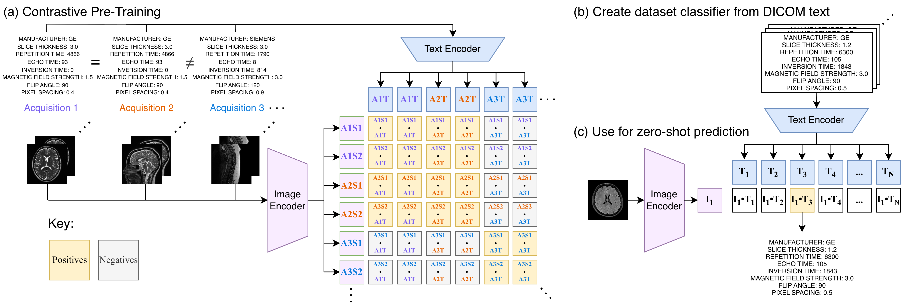
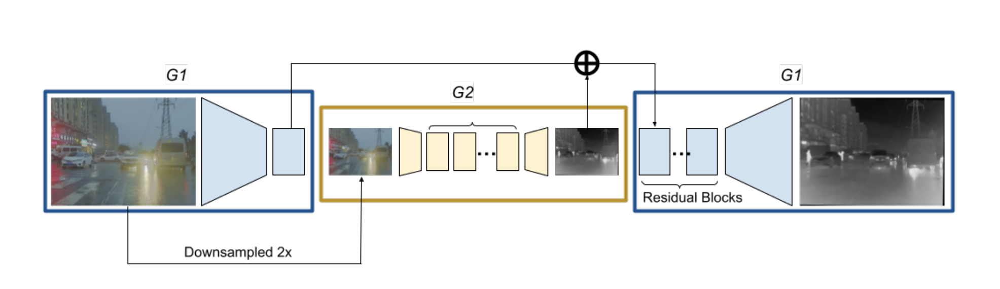

Publications

DICOM-CLIP: Zero-Shot Acquisition Parameter Retrieval from Unprocessed DICOM Files
ISBI 2026 (Oral)

SSL-RGB2IR: Semi-supervised RGB-to-IR Image-to-Image Translation for Enhancing Vision Task Training in Semantic Segmentation and Object Detection

Supervised Image Translation from Visible to Infrared Domain for Object Detection